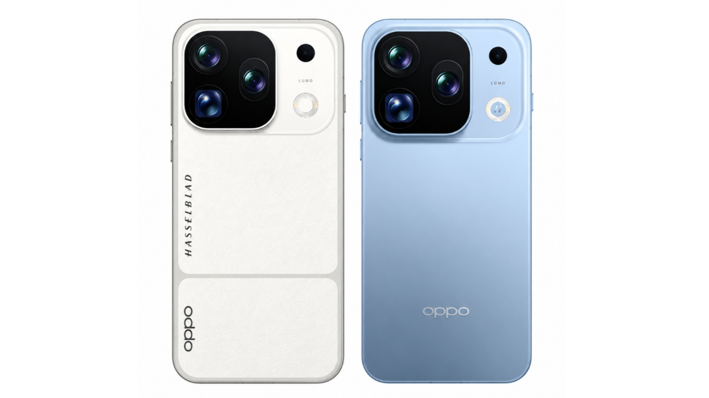
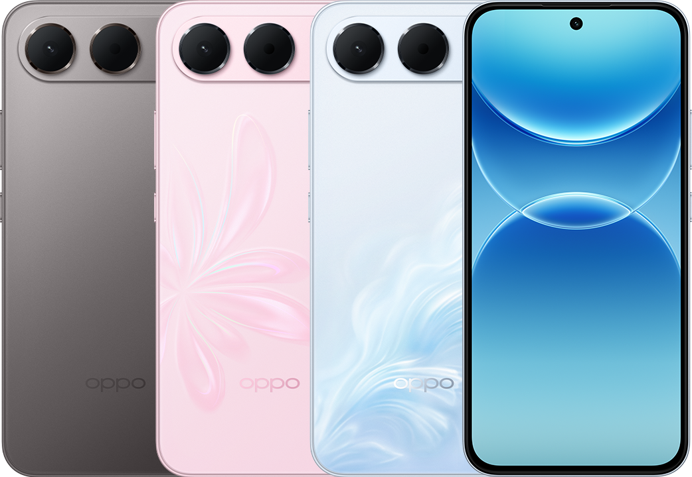
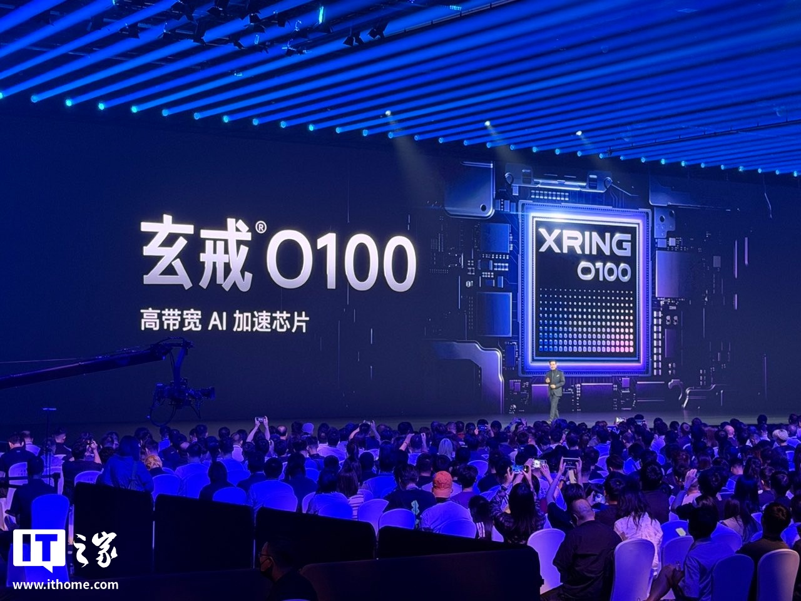
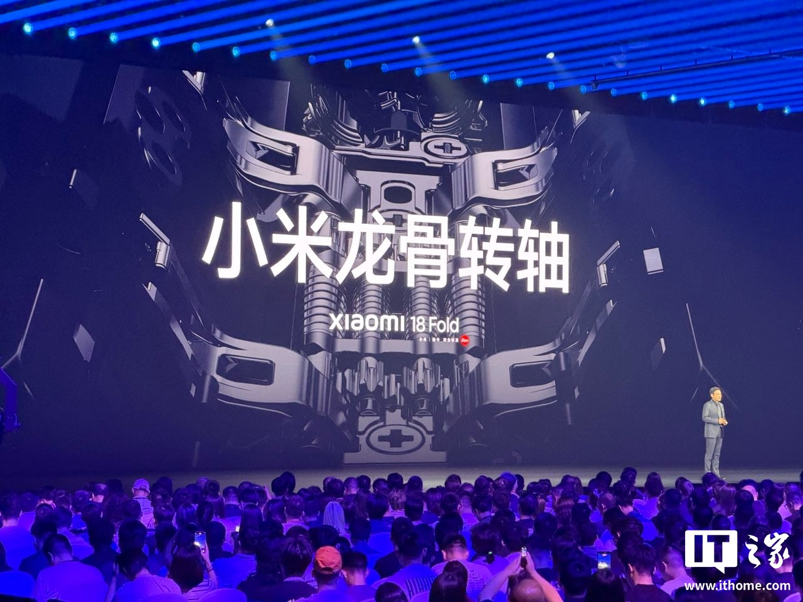
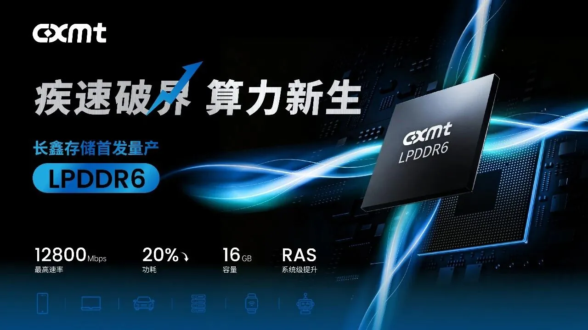
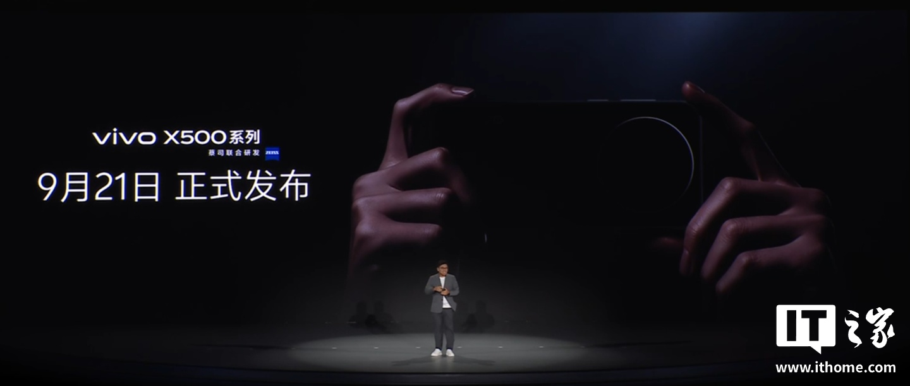
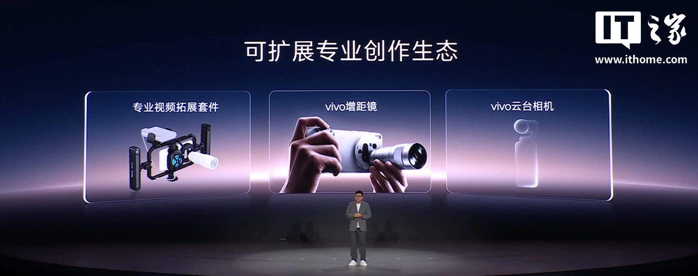
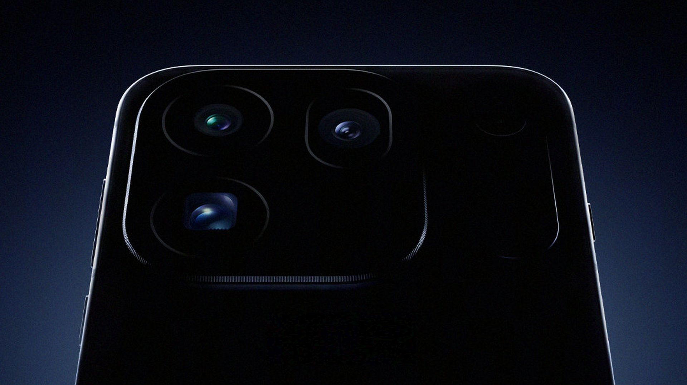
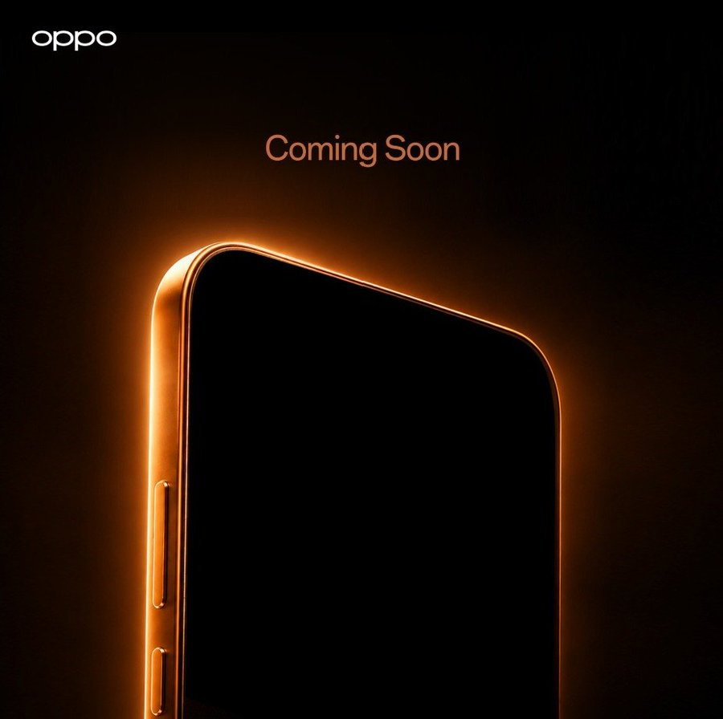
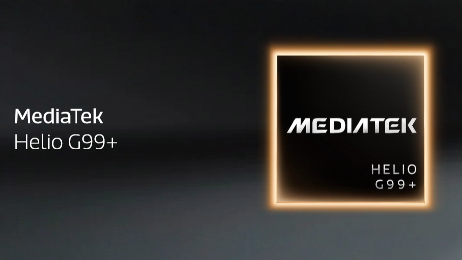

THE TECH EDIT
기술의 변화, 매일 한눈에.
카메라 · 스마트폰 · AI, 해외 테크 소식을 모아 전합니다.
최근 발행2026-09-09
새로 들어온 소식
LATEST STORIES최신 뉴스
전체 2,774개 기사
오포 Find X10 Pro Max의 트리플 200MP 카메라 세부 정보 공개

Oppo A7 Pro, 8,000mAh 배터리, 120Hz OLED 디스플레이, 50MP 카메라 탑재하여 출시

Galaxy A07s, Helio G99+ 칩 및 50MP+2MP 후면 카메라 탑재하여 출시

세계 최초 6nm 3D 웨이퍼 레벨 스태킹 첨단 패키징, Xiaomi XRING O100 330TPS 초고성능 엣지 추론 속도 달성

레이쥔, Xiaomi 18 폴더블 스마트폰에 차세대 Xiaomi 용골 힌지 탑재 공식 발표: 3단계 연결 구조, 자연스러운 물방울 형태

Xiaomi 18 Fold에 최초 탑재, 창신(CXMT) LPDDR6 플래그십 스마트폰 양산 최초 성공 발표
1인 1대 한정: Xiaomi 18 Fold 폴더블 스마트폰, 징둥에서 20시 판매 시작, 12개월 무이자 + 998위안 듀얼 스크린 보험 증정

Xiaomi 18 폴드 미드 폴더블 스마트폰 세라믹 스페셜 에디션 공개, 핑크색 외관 디자인 채택

Xiaomi 18 Fold 폴더블 스마트폰 출시: XRING O3 칩 최초 탑재, 10,999위안부터

vivo X500 시리즈 스마트폰, 블루프린트 광위 900 센서 세계 최초 탑재, CIPA 7.0 손떨림 보정, AI 사진 어시스턴트

vivo 최강 카메라 플래그십 X500 시리즈 스마트폰, 9월 21일 출시 공식 발표

vivo 짐벌 카메라 공식 발표: 내년에 놀라움을 선사할 수 있기를 기대

vivo 블루프린트 이미징 전략 업그레이드, 새로운 AI 사진 어시스턴트 출시 예정

2026년 9월 출시 예정 스마트폰 상위 5종

Oppo Find X10 Pro Max, 3개의 200MP 카메라 탑재하여 이번 달 출시 공식 확정

오포 F 시리즈 스마트폰 티저 공개; 10,000mAh 배터리 탑재한 F35 Pro일까?

OnePlus 16, 9000mAh 배터리 탑재 확정… 차세대 플래그십 스마트폰 중 최대 용량
세계 최초 AI 에이전트 스마트폰: Nubia NaviX Ultra 사전 예약 시작, 다음 주 수요일 출시
누비아 NaviX Ultra, 다음 주 세계 최초 AI 에이전트 스마트폰으로 출시

미디어텍 헬리오 G99+, 보급형 스마트폰을 위한 더 빠른 RAM을 탑재한 새로운 4G 칩셋으로 출시

위청둥: 새로운 3단 폴더블 스마트폰 Mate XT 2 비범대사는 Huawei 폴더블 기술의 집대성이다
검색 결과가 없습니다
다른 검색어를 입력하거나 필터를 초기화해 보세요.